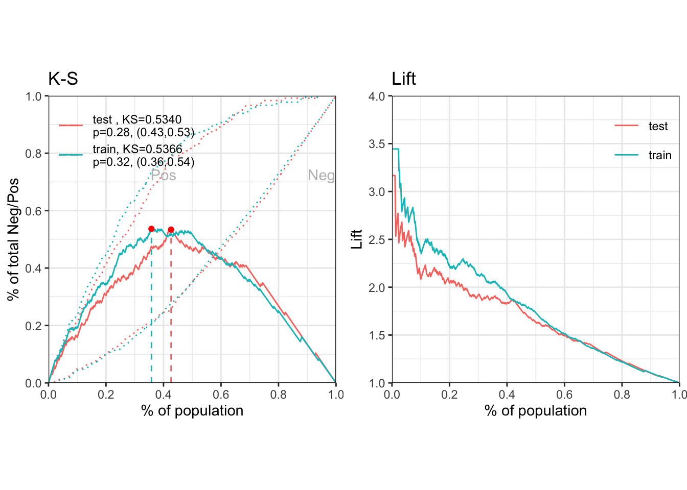

为了提高信用评分卡的建模效率，我为R语言社区贡献了一个开源项目 scorecard 包( Github, CRAN)。该 R 包提供了评分卡开发过程中的常用功能，例如：变量粗筛、最优分箱与分箱调整、模型评估、评分刻度转换等。
评分卡模型的开发流程通常包括以下五个主要步骤：数据准备、变量筛选、模型开发、模型评估、评分卡刻度。更加详细的模型开发请参考 幻灯片-使用R语言开发评分卡模型。下面结合 scorecard 包完成一个简单的评分卡模型开发案例。
数据准备与粗筛
首先加载 scorecard 包，并载入包内自带的德国信贷数据集。该数据集包含了1000个借款人的信贷数据，20个 X 特征与1个的 Y 值。其详细信息参见 UCI 的德国信贷数据集。
library(scorecard)
# load germancredit data
data(germancredit)载入数据集后，可先通过变量的 IV 值、缺失率以及单类别率对 X 特征进行粗筛。var_filter 函数默认删除信息值小于0.02、缺失率大于95%或单类别比例大于95%的变量。var_filter 函数还能够人为设定需要删除或保留的变量，还能够返回变量删除的原因列表。
# filter variable via missing rate, iv, identical value rate
dt = var_filter(germancredit, y = 'creditability')## [INFO] filtering variables ...将经过粗筛的数据集拆分为训练集与测试集。在 split_df 函数中如果指定了 y 变量，那么将基于 y 变量分层拆分，如果没有指定，则随机拆分数据集。ratio 为拆分后两个数据集的样本量占比。 seed 为随机种子，用于重现样本的拆分。
# breaking dt into train and test
dt_list = split_df(dt, y="creditability", ratio = 0.6, seed = 30)
label_list = lapply(dt_list, function(x) x$creditability)分箱与 woe 转换
接下来对数据集进行分箱与 woe 值转换。由于这个数据集样本量比较小，我们直接对全样本进行分箱处理。如果数据量允许，应该使用训练集进行分箱，并使用训练集得到的 woe 值进行替换。
woebin 函数提供了树形 tree、卡方合并 chimerge、等宽 width 与等高 freq 四种分箱方法。以树形分箱为例，默认情形是当信息值增益率 stop_limit 小于0.1, 或分箱数 bin_num_limit 大于8(缺失值除外)时停止分箱，同时确保每一个分箱的样本占比 count_distr_limit 不小于0.05。 woebin 函数还能够通过 breaks_list 手动设定分箱节点。其输出的结果为多个 data.frame 组成的 list，可通过 data.table::rbindlist 或 dplyr::bind_rows 函数合并为一个数据框然后保存。当然 woebin 函数也能够直接输出一个分箱切割点的 list 并保存，下次使用时直接通过 breaks_list 参数对新的数据集进行分箱。
woebin_adj 函数可逐个观察每个变量的分箱情况。如果不满意默认的分箱结果，可以手动修改，并保存经过手动调整的分箱节点。
分箱之后需要使用 woebin_ply 函数将训练集与测试集转换为对应的 woe 值。当然该函数也支持将原始数据转换为对应的分箱区间。
# woe binning
bins = woebin(dt, "creditability", print_step=0)## [INFO] creating woe binning ...woebin_plot(bins[[1]])## $status.of.existing.checking.account
# converting train and test into woe values
dt_woe_list = lapply(dt_list, function(x) woebin_ply(x, bins))## [INFO] converting into woe values ...
## [INFO] converting into woe values ...模型开发
在获得 woe 值替换之后的数据集，可以进行逻辑回归拟合，并通过AIC、L1等方法进行变量筛选。
# lr
m1 = glm( creditability ~ ., family = binomial(), data = dt_woe_list$train)
# vif(m1, merge_coef = TRUE) # summary(m1)
# Select a formula-based model by AIC (or by LASSO for large dataset)
m_step = step(m1, direction="both", trace = FALSE)
m2 = eval(m_step$call)
vif(m2, merge_coef = TRUE) # summary(m2)## variable Estimate
## 1: (Intercept) -0.9453
## 2: age.in.years_woe 0.8976
## 3: credit.amount_woe 0.7681
## 4: credit.history_woe 0.8065
## 5: duration.in.month_woe 0.8297
## 6: housing_woe 0.7413
## 7: installment.rate.in.percentage.of.disposable.income_woe 2.0048
## 8: other.debtors.or.guarantors_woe 2.0676
## 9: other.installment.plans_woe 0.8569
## 10: personal.status.and.sex_woe 0.9633
## 11: purpose_woe 0.8241
## 12: savings.account.and.bonds_woe 0.8684
## 13: status.of.existing.checking.account_woe 0.7872
## Std. Error z value Pr(>|z|) gvif
## 1: 0.1098 -8.608 0.0000 NA
## 2: 0.3066 2.927 0.0034 1.077
## 3: 0.2848 2.697 0.0070 1.249
## 4: 0.2046 3.942 0.0001 1.070
## 5: 0.2314 3.586 0.0003 1.188
## 6: 0.3679 2.015 0.0439 1.037
## 7: 0.6894 2.908 0.0036 1.111
## 8: 0.8908 2.321 0.0203 1.039
## 9: 0.4390 1.952 0.0510 1.080
## 10: 0.5322 1.810 0.0703 1.108
## 11: 0.2770 2.975 0.0029 1.047
## 12: 0.2611 3.326 0.0009 1.042
## 13: 0.1392 5.657 0.0000 1.050模型评估
通过逻辑回归获得各变量的拟合系数之后，需要首先计算出各个样本的概率，然后评估模型的效果。 perf_eva 函数能够计算的评估指标包括 mse, rmse, logloss, r2, ks, auc, gini，以及绘制多种可视化图形 ks, lift, gain, roc, lz, pr, f1, density。
## predicted proability
pred_list = lapply(dt_woe_list, function(x) predict(m2, x, type='response'))
## performance
perf = perf_eva(pred = pred_list, label = label_list)## [INFO] The threshold of confusion matrix is 0.3749.
评分卡刻度
获得了各个变量的分箱结果，并且确定了最终进入模型的变量以及系数，我们可以创建标准的评分卡。
有了评分卡之后，可用于对新样本进行打分，从而评估其信用水平，并最终作出审批决策。
最后，评分卡模型的开发过程，还需要对模型的稳定性进行评估，即计算psi。
## scorecard
card = scorecard(bins, m2)
## credit score
score_list = lapply(dt_list, function(x) scorecard_ply(x, card))
## psi
perf_psi(score = score_list, label = label_list)## $pic
## $pic$score##
##
## $psi
## variable dataset psi
## 1: score train_test 0.02767